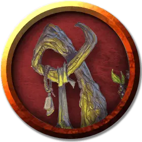

Оживлённый посох
Animated Staff
Средний Конструкт, нейтрально-злой

Класс Доспеха 17 (природный доспех)
Хиты 40 (12к6 - 2)
Скорость 0 футов, летая 30 футов (парит)
| мод | спас | ||
|---|---|---|---|
| СИЛ | 12 | +1 | +1 |
| ЛОВ | 12 | +1 | +1 |
| ТЕЛ | 10 | +0 | +0 |
| мод | спас | ||
|---|---|---|---|
| ИНТ | 18 | +4 | +4 |
| МДР | 14 | +2 | +2 |
| ХАР | 10 | +0 | +0 |
Сопротивление урону холод
Иммунитет к урону яд
Чувства слепое зрение 60 футов (слеп за пределами этого радиуса), пассивное Восприятие 12
Языки Общий
Опасность —
Бонус мастерства +2
Особенности
Подчинение владельца. Существо может попытаться схватить летающий посох с помощью успешной проверки захвата против посоха, и захват посоха при этом не уменьшает скорость существа.
Любое успешно схватившее посох существо, должно преуспеть в спасброске Сл 12 Харизмы, иначе станет очарованным посохом до тех пор, пока посох не высвободится из его рук. Пока существо очаровано, посох может отдавать ему команды, и существо изо всех сил будет пытаться их выполнить. Каждый раз при получении урона существо может повторить спасбросок, прекращая эффект очарования в случае успеха. Успешно устоявшее против контроля посоха существо, не может быть очаровано им в течение 24 часов.
Держащее посох и не очарованное им существо, может действием попытаться сломать посох об колено или твердую поверхность при помощи успешной проверки Силы (Атлетика) Сл 17 . Сломанный таким образом посох разрушается.
Действия
Посох мороза. Посох имеет 10 зарядов. Он может действием потратить часть зарядов и наложить одно из следующих заклинаний (Сл спасброска 12): град [ice storm] (4 заряда), конус холода [cone of cold] (5 зарядов), ледяная стена [wall of ice] (4 заряда) или туманное облако [fog cloud] (1 заряд).
Он ежедневно восстанавливает 1к6 + 4 заряда на рассвете. Если он истратил последний заряд, бросьте к20. Если выпадет «1», посох превращается в воду и уничтожается.
Посох. . Рукопашная атака оружием: +3 к попаданию, досягаемость 5 футов, одна цель. Попадание : Дробящий урон 5 (1к8 + 1).
Описание
Эззат оживил посох мороза [staff of frost] и наделил его разумом. Из-за внесенных в него изменений посох теперь является существом и больше не может использоваться в качестве магического предмета.